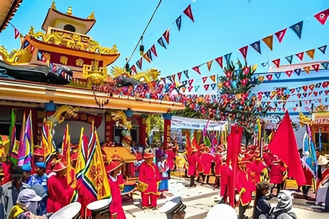

文化と人々
ベトナム南部の港町ブンタウは、海とともに生きる人々の温かさが息づく街です。昔ながらの生活と近代文化が見事に調和し、訪れる人の心を和ませます。ここでは、漁師の暮らし、伝統行事、信仰、そして家族の絆などを通じて、ブンタウの「人間らしい魅力」を感じることができます。観光地として発展しながらも、人々の優しさと素朴な笑顔がこの街の本当の宝です。忙しい日常を離れ、ここで過ごすひとときは、まるで時間がゆっくりと流れているような心地よさを与えてくれます。


ベトナム南部の港町ブンタウは、海とともに生きる人々の温かさが息づく街です。昔ながらの生活と近代文化が見事に調和し、訪れる人の心を和ませます。ここでは、漁師の暮らし、伝統行事、信仰、そして家族の絆などを通じて、ブンタウの「人間らしい魅力」を感じることができます。観光地として発展しながらも、人々の優しさと素朴な笑顔がこの街の本当の宝です。忙しい日常を離れ、ここで過ごすひとときは、まるで時間がゆっくりと流れているような心地よさを与えてくれます。

ブンタウは、美しい海岸線と多彩な観光スポットで知られる人気リゾート地です。町の象徴であるキリスト像、歴史ある灯台、広大なビーチ、そして神秘的なホンバ島など、見どころが満載です。自然の美しさと人々の営みが調和し、どこを訪れても心が癒されます。写真を撮るのが好きな人にも、静かに過ごしたい人にも、ブンタウはぴったりの場所。朝の海風、昼の太陽、夜の波音――一日中その魅力に包まれるでしょう。

「海の町・ブンタウ」は、食の宝庫でもあります。豊富な海産物を使った料理、香ばしい屋台グルメ、素朴な朝ごはん、そして地元で愛されるスイーツまで、食の魅力があふれています。ベトナム料理の特徴であるハーブと魚醤の香り、南部特有の甘みが調和し、どの料理も心に残る味わいです。ブンタウの食は単なる食事ではなく、文化そのもの。家族や友人と囲む食卓には、人々の温もりと笑顔が溢れています。
ブンタウの旅を終えた後も、あの潮風と味を思い出せる――それがお土産の魅力です。ブンタウでは、新鮮な魚介を使った干物や魚醤、甘じょっぱいスイーツ、手作りの貝殻アクセサリーなど、心のこもった特産品が揃っています。どれも地元の自然や人の手によって丁寧に作られ、旅の思い出として持ち帰るのに最適です。贈る人にも、もらう人にも笑顔を届けるブンタウのお土産は、この街のやさしさそのものです。

ブンタウでは、ただ観光するだけではなく「感じる」旅ができます。海でのアクティビティ、自然との触れ合い、地元の暮らしを体験する時間――それぞれが心に残る瞬間を生み出します。サーフィンや釣り、自転車での街巡りなど、体を動かして楽しむアクティビティのほか、スパやサンセットクルーズで癒しを求める人にも最適です。ブンタウの海と風、そして人の温かさを全身で感じることで、旅は特別な思い出へと変わります。